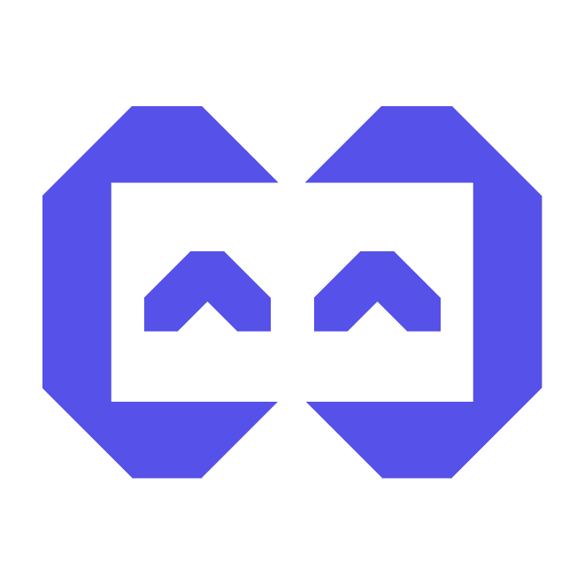

精心挑选的 AI 编程工具栈。无论内网外网，由你掌控。

Powered by 数据智能中心
专为小鹏内部打造。无需研发背景。无需繁杂配置。
连接 GitLab，AI 为你自动生成并提交代码。你的专属开发平台。
与 AI 结对编程，沟通胜过技术。6 个核心步骤，助你轻松驾驭全局。
从域名注册到全球部署，完整流程指南。📖 查看完整攻略
在阿里云轻松选购你的专属标识。
通过阿里云快速提交。
约 7-14 天即可完成。
简单设置 DNS，
将域名指向你的专属空间。
一键部署至 Vercel 或 Cloudflare，
让世界看见。